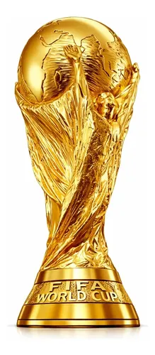

Nesse ano a copa do Mundo de 2026 vai ser histórica, Com a Alemanha podendo chegar ao prnta, Argentina ao tetra, frança e Uruguai ao tricanunica campeã, Mas alem disso o Brasil pode Chegara marcar historicamente de ser, isolado e únicohexacampeão,
Fatos Marcantes e Recordes das CopasO Brasil detém o recorde absoluto de participações e de gols. É a única seleção a disputar todas as edições e o maior vencedor do torneio. Outra curiosidade envolvendo o Brasil é que a maior goleada sofrida pela seleção ocorreu em 2014, quando foi derrotada pela Alemanha pelo placar de 7 a 1.
O torneio de 2026, realizado de forma inédita em três países sede (Estados Unidos, México e Canadá), marcou a primeira edição com 48 seleções participantes e um formato de 104 jogos. Com o encerramento do Mundial e o início do segundo semestre de 2026, os holofotes do futebol se voltam para grandes transformações políticas, além do início dos planejamentos para o ciclo de 2030.
